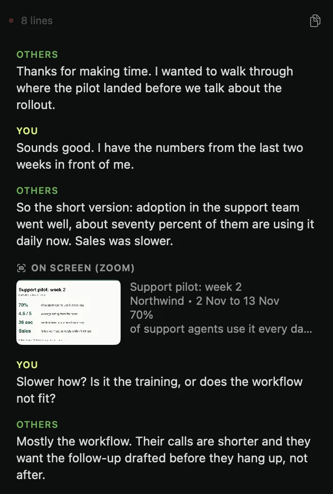
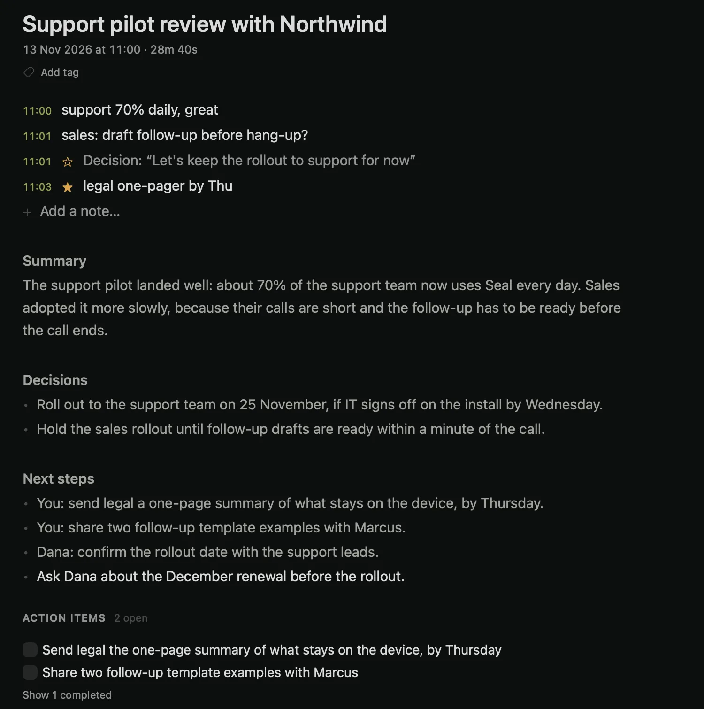

It notices the meeting
When Zoom, Meet or Teams turns on your microphone, Seal offers to record. A tab waits at the screen's edge.

Seal hears both sides of the call, writes the notes and answers your questions, all on your Mac. No bot joins the call. Nothing goes to a cloud. There's no account.
macOS 14 or later · Apple silicon · about 3–6 GB of models, downloaded once

Seal sits in the background until a call starts, listens while it runs, and has the notes ready when you stop.
When Zoom, Meet or Teams turns on your microphone, Seal offers to record. A tab waits at the screen's edge.
Your microphone and the call's audio, transcribed as people speak. Slides on the call are read too.

A summary, decisions, next steps and action items, written on your Mac the moment you stop.

During the call or months later: what was agreed, who owns what, a draft of the follow-up. Attach a plan or a PDF and ask how it compares. Answers are written on your Mac.

Lines you wrote stay bright. Lines the model wrote are quieter. Edit one and it becomes yours.
New slides on the call are read into the notes. Video tiles are ignored.

By meaning, not exact words. Folders for clients and projects.
Markdown, PDF, Word, SRT and VTT. Your notes are files you own.
English, Ukrainian, and calls that switch between them.
Seal has no server to send your meetings to, so it doesn't need one. Try it: switch the Wi-Fi off below and the call keeps being transcribed.
Most AI note-takers are cloud services wearing an app. Seal is a Mac app. Named comparisons: Granola, Otter.ai.
| Question | Seal | Cloud note-takers |
|---|---|---|
| Where your audio is processed | On your Mac | On their servers |
| A bot in your call | Never | Usually a visible participant |
| Account required | None | Sign-up first |
| Works offline | Fully | Needs a connection |
| Your meeting history | Files on your Mac | Held in their cloud |
| What you pay | Nothing | A monthly subscription |
| If the company disappears | The app keeps working | The service usually stops |
No. Recording, transcription and notes all run on your Mac, and Seal has no server to send meetings to. If you choose to turn on a cloud model with your own API key, only transcript text is sent, never your audio, and transcription always stays on the Mac.
macOS 14 or later and an Apple-silicon Mac. The models download once, roughly 3 to 6 GB together, the first time you record and make notes. After that nothing needs the network.
Yes, all of it. No meeting limits, no trial, no account, no subscription.
Seal runs on your Mac, so it costs nothing when you use it. Cloud note-takers charge monthly because every minute you record costs them money; Seal doesn't have that meter.
Free to download. Free to use. Sealed by design.
One short email when a new version ships. This list belongs to the website; the app never asks who you are.